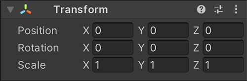
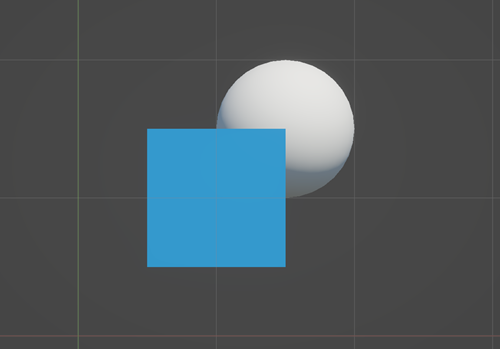
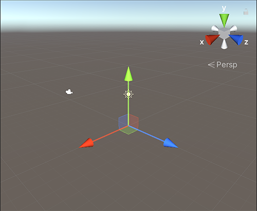

Introduction to transforms
Switch to ScriptingEvery GameObject has a Transform component attached, which you can’t remove. Every Transform component stores a GameObject’s local position, local rotation, local scale and parenting state. Unity uses these local values relative to the GameObject’s parent transform to compute its position, rotation, and scale in a world space.

Parent and child relationship
You can group GameObjects into parent-child hierarchies:
- A GameObject which has other GameObjects connected to it becomes a parent.
- A GameObject which is connected to another GameObject becomes a child.
A child GameObject takes on its parent GameObject’s transform properties, so it moves, rotates, and scales exactly as its parent does. Child GameObjects can have child GameObjects of their own. A GameObject can have multiple child GameObjects, but only one parent GameObject.

To learn more about parent-child relationships, refer to Parent-child relationships in the Hierarchy window.
Local and world space
Every GameObject has a Position, Rotation, and Scale in two spaces:
| Space name | Space description |
|---|---|
| World space | World space refers to the position of a GameObject relative to the origin point (0, 0, 0) of the x-, y-, and z-axes of the scene. The transform.position property gives a GameObject’s current position in world space. |
| Local space | Local space refers to the position of an object relative to its parent GameObject, including any rotation and scale of the parent GameObject. The transform.localPosition property gives a GameObject’s current position in local space, which is relative to the parent GameObject if there’s one. If a GameObject has no parent, its transform.localPosition is the same as its transform.position. |
For example, a scene has two GameObjects that have the following parent-child relationships:
- The parent GameObject has a Transform component with a (0.5, 0.5, 0.5) position, no rotation, and a (1, 1, 1) scale.
- The child GameObject has a Transform component with a (1, 1, 1) position, no rotation, and a (1, 1, 1) scale.
In this case, the child GameObject has a local space position of (1, 1, 1), and a world space position of (1.5, 1.5, 1.5) because it takes on the parent’s transform properties.

Tip: Before you add a child GameObject to another GameObject, set the position and rotation of the parent GameObject’s transform to (0, 0, 0), and its scale to (1, 1, 1). In this case, the local coordinates of the child’s transform are the same as the global coordinates. This makes it easier to ensure the child transform is in the right position.
For more information about local and world space, refer to the Space API reference.
TransformHandle API
TransformHandle API allows you to interact with transforms using an unmanaged struct, which makes it compatible with the Burst compiler. To learn more about TransformHandle API, refer to Using unmanaged API for transform operations.
Edit transforms in the Editor
In 2D space, you can manipulate transforms on the x-axis or the y-axis only. In 3D space, you can manipulate transforms on the x-axis, y-axis, and z-axis. In Unity, these axes are represented by the colors red, green, and blue respectively.
Tip: You can change the colors of the Transform axes via the Colors preferences. To do this, go to Edit > Preferences > Colors (macOS: Unity > Settings > Colors) in the main menu.

There are two primary ways you can edit a Transform’s properties in the Unity Editor:
- In the Scene viewAn interactive view into the world you are creating. You use the Scene View to select and position scenery, characters, cameras, lights, and all other types of Game Object. More info
See in Glossary. - In the Inspector window.
To learn more about editing transforms in the Editor, refer to Position GameObjects.
Change a transform from a script
You can manipulate transforms from a script by using the transform property of the GameObject. The following example illustrates some basic operations to manipulate the transform values of a parent and child GameObject. To use it, attach the script to a GameObject, and assign a parent GameObject and its child GameObject in the Inspector. If you set up the GameObjects as in the Local and world space example, the child’s position in world space changes from (1.5, 1.5, 1.5) to (1.5, 2, 2).
public class TransformExample : MonoBehaviour
{
[SerializeField] GameObject parent;
[SerializeField] GameObject child;
void Start()
{
SetPosition();
}
void SetPosition()
{
Debug.Log($"Parent World position is: {parent.transform.position} before movement." +
$"Child World position is: {child.transform.position} before movement.");
//Access and assign a copy of the parent World position value to Vector3.
var parentWorldPosition = parent.transform.position;
//Access and assign a copy of the child World position value to Vector3.
var childWorldPosition = child.transform.position;
//Access and assign a copy of the child Local position value to Vector3.
var childLocalPosition = child.transform.localPosition;
//Modify the childLocalPosition y and z values.
childLocalPosition += new Vector3(0, (float)0.5, (float)0.5);
//Apply a new Vector3 value to the child transform local position.
//You can't directly assign the value to the axis. To assign the value, you must use Vector3.
//Assigning the value directly, such as child.transform.localPosition.y = 0, causes compiler error CS1612.
child.transform.localPosition = childLocalPosition;
Debug.Log($"Parent World position is: {parent.transform.position} after movement." +
$"Child World position is: {child.transform.position} after movement.");
}
}
Note: Don’t set transform.position on a GameObject that has a RigidbodyA component that allows a GameObject to be affected by simulated gravity and other forces. More info
See in Glossary component when Rigidbody.isKinematic is set to false. Use the Rigidbody.MovePosition method instead. When a GameObject has a Rigidbody component that’s not kinematic, the physics engine controls its position and rotation. Setting transform.position directly bypasses the physics simulation and can cause unexpected behavior, such as GameObjects that teleport or miss collisions with other GameObjects.
For a complete reference of every member of the Transform class and usage examples, refer to the Transform API reference.
Properties
The following table describes the properties of the Transform component in the Inspector window:
| Property: | Function: |
|---|---|
| Position | Position of the Transform in the x, y, and z coordinates. |
| Rotation | Rotation of the Transform around the x-axis, y-axis, and z-axis, measured in degrees. |
| Scale | Scale of the Transform along the x-axis, y-axis, and z-axis. The value 1 is the original size (the size at which you imported the GameObject). |
| Enable Constrained Proportions | Force the scale to maintain its current proportions, so that changing one axis changes the other two axes. Disabled by default. |
Unity measures the Position, Rotation and Scale values of a Transform relative to the Transform’s parent. If the Transform has no parent, Unity measures the properties in world space.
Transforms and scale
The Scale property of the Transform determines the difference between the size of a mesh in your modeling application and the size of that mesh in Unity. The mesh’s size in Unity (and therefore the Transform’s scale) is important, especially during physics simulation. By default, the physics engine assumes that one unit in world space corresponds to one meter (1 m). If a GameObject is large, it can appear to fall slowly. The simulation is correct because you’re watching a large GameObject fall a great distance.
Three factors affect the Scale of your GameObject:
- The size of your mesh in your 3D modeling application.
- The Mesh Scale Factor setting in the GameObject’s Import Settings.
- The Scale values of your Transform component.
Don’t adjust the Scale of your GameObject in the Transform component. If you create your models at real-life scale, you won’t have to change your Transform’s Scale. You can also adjust the scale at which your mesh is imported because some optimizations occur based on the import size. Do this in the Import settings for your individual mesh. Instantiating a GameObject that has an adjusted Scale value can decrease performance.
Never set any Scale axis to 0 in the Transform component. Doing so can cause undefined results for math calculations, such as NaN (Not a Number) values in rendering, which leads to incorrect graphical artifacts on screen.
Changing the Scale affects the position of child Transforms. For example, scaling the Transform of the parent GameObject to (0, 0, 0) positions all child Transforms at (0, 0, 0) relative to the Transform of the parent GameObject.
Non-uniform scaling
Non-uniform scaling is when the Scale in a Transform has different values for x, y, and z, for example (2, 4, 2). In contrast, uniform scaling has the same value for x, y, and z, for example (3, 3, 3). Non-uniform scaling can be useful in a few specific cases but it behaves differently to uniform scaling:
- Some components don’t fully support non-uniform scaling. For example, some components have a circular or spherical element defined by a radius property, such as Sphere Collider, Capsule Collider, Light, and Audio Source. This means the circular shape remains circular under non-uniform scaling instead of elliptical.
- If a child GameObject has a non-uniformly scaled parent GameObject and is rotated relative to that parent GameObject, it might appear skewed. There are components that support simple non-uniform scaling but that don’t work correctly when skewed like this. For example, a skewed Box Collider doesn’t match the shape of the rendered mesh accurately.
- A child GameObject of a non-uniformly scaled parent GameObject doesn’t have its scale automatically updated when it rotates. As a result, the child GameObject’s shape might appear to change abruptly when you update the scale, for example, if the child GameObject is detached from the parent GameObject.